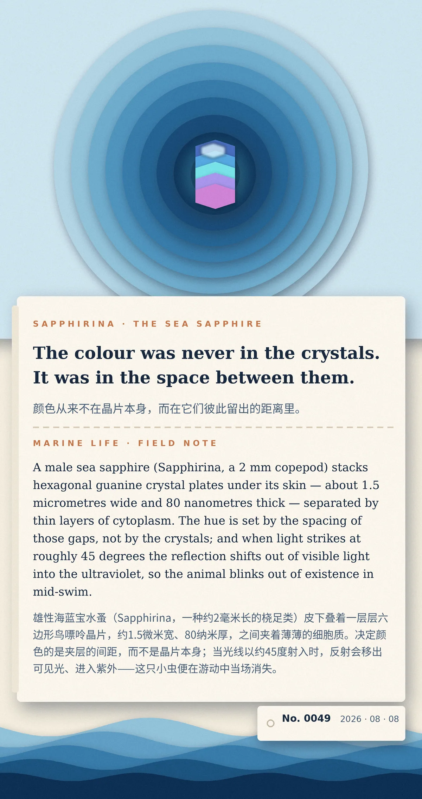

The colour was never in the crystals. It was in the space between them.（颜色从来不在晶片本身，而在它们彼此留出的距离里。）
A male sea sapphire (Sapphirina, a 2 mm copepod) stacks hexagonal guanine crystal plates under its skin — about 1.5 micrometres wide and 80 nanometres thick — separated by thin layers of cytoplasm. The hue is set by the spacing of those gaps, not by the crystals; and when light strikes at roughly 45 degrees the reflection shifts out of visible light into the ultraviolet, so the animal blinks out of existence in mid-swim.（雄性海蓝宝水蚤皮下叠着一层层六边形鸟嘌呤晶片，约1.5微米宽、80纳米厚，之间夹着细胞质。决定颜色的是夹层间距而非晶片本身；当光以约45度射入，反射移出可见光进入紫外，这只小虫便在游动中当场消失。）
冷知识由执笔的模型自行查证。逐条断言、来源与所引原句存档在纯文字副本里，未经程序逐字校验，留作事后核实。